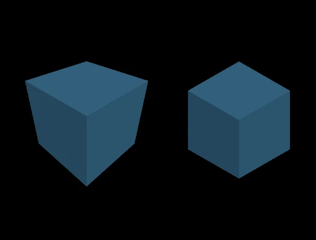

Who?
FreeCodeCamp is the source of the demo.
Where?
When?
The article was written on Febuary 3, 2021.What
Three.js is a javascript library that can be used to render 3D objects in the browser. Three.js uses WebGL under the hood to render the graphics.Why?
I find this interesting because you can tranform a 2D plane (the browser) into a 3D experience. If implemented properly it can leave users with a unique expereince. Another reason I found this interesting is because you can create browser games using this library.
Step 1 - Access three.js
Before we can get started we need a way to access the three.js library. There are two ways of doing this. One way is to use NPM and a build tool to install it locally and the second is to use a CDN. If you don't have NPM and would like to install it instructions are found here.
# three.js
npm install --save three
To import from a CDN you simply put the code below in the head element. Replace "version" with whatever version you want, in todays tutorial I will be using v0.158.0.
<script type="importmap">
{
"imports": {
"three": "https://unpkg.com/three@<version>/build/three.module.js",
"three/addons/": "https://unpkg.com/three@<version>/examples/jsm/"
}
}
</script>
Step 2 - Set The Scene
Import the "three" library and define the scene object. This is where we put 3D objects and lights. You can edit some properties of the scene, in this example we will use the default settings.
import * as THREE from "three";
const scene = new THREE.Scene();
scene.background = new THREE.Color(0x000000); // Optional, black is defaultStep 3 - Mesh it Up
Add a 3D box to the scene as a mesh. A mesh is a combination of geometry and a material.
// Add a cube to the scene
const geometry = new THREE.BoxGeometry(3, 1, 3); // width, height, depth
const material = new THREE.MeshLambertMaterial({ color: 0x5499C7 });
const mesh = new THREE.Mesh(geometry, material);
mesh.position.set(0, 0, 0); // Optional, 0,0,0 is the default
scene.add(mesh);
Step 4 - Let there be light
Some objects will have a set color regardless of light because of the material. The lambert and phong material require light to show their color. There are two types of light ambient and directional. Ambient light will illuminate every side of the shape, but it won't show dimension. This is where directional lights come in. With directional light you can light up an object the same way you would in real life given a dark room and a light source.
// Set up lights
const ambientLight = new THREE.AmbientLight(0xffffff, 0.6);
scene.add(ambientLight);
Step 5 - Camera
So far we have a mesh, lights, and a scene. Now we need a camera to define how we see the scene. There are two options perspective cameras and orthographic cameras. Perspective cameras give you the impression of being in the scene because they mimic real life. Closer objects appear larger and further objects appear smaller. Orthographic camers display everything as the same size no matter the distance. The image below shows the difference between the two.
If you have decided on a perspective camera use the code below to intiate the camera object.
// Perspective camera
const aspect = window.innerWidth / window.innerHeight;
const camera = new THREE.PerspectiveCamera(
45, // field of view in degrees
aspect, // aspect ratio
1, // near
100 // far plane
);
camera.position.set(4, 4, 4); //set where the camera is
camera.lookAt(0, 0, 0); //set the direction of the camera
If you have decided on an orthographic use this code.
// Orthographic camera
const width = 10;
const height = width * (window.innerHeight / window.innerWidth);
const camera = new THREE.OrthographicCamera(
width / -1, // left
width / 1, // right
height / 1, // top
height / -1, // bottom
1, // near
100 // far
);
camera.position.set(4, 4, 4); //set where the camera is
camera.lookAt(0, 0, 0); //set the direction of the camera
Step 6 - Lights, Camera, Action!
Now that we have everything in our scene, we need something to render it to our browser. We will define a WebGLRenderer that will render the image to an HTML canvas. Now is when we set the width and height of the canvas.
// Renderer
const renderer = new THREE.WebGLRenderer({ antialias: true });
renderer.setSize(window.innerWidth, window.innerHeight);
renderer.render(scene, camera);
// Add it to HTML
document.body.appendChild(renderer.domElement);
You should now have a 3D rendered object made with three.js. Credit goes to Hunor at freeCodeCamp for providing an excellent tutorial.
Learn More JS Used